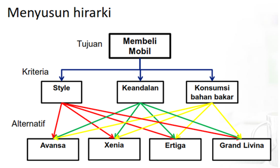

AI Decision Copilot — Smarter Decision Analysis
Berdasarkan evaluasi AHP terhadap 4 alternatif mobil dan 3 kriteria keputusan, Suzuki Ertiga terpilih sebagai rekomendasi pembelian paling optimal dengan skor akhir 48.14%, melampaui peringkat #2 Nissan Grand Livina (27.53%) dengan margin keunggulan signifikan +20.61%. Faktor penentu terbesar adalah dominasi mutlak Ertiga pada kriteria berbobot tertinggi yaitu Keandalan (55.71%) dengan bobot lokal 57.77%. Seluruh matriks perbandingan berpasangan memenuhi batas toleransi Saaty dengan CR ≤ 0.10.
Suzuki Ertiga
Berdasarkan hasil pembobotan metode AHP dengan memperhitungkan faktor Style, Keandalan, dan Konsumsi BBM, mobil yang terpilih untuk dibeli adalah Suzuki Ertiga dengan keunggulan signifikan.
Faktor Utama Kemenangan:
Diagram Asli dari Lembar Kerja Excel Proyek:

| Matriks Perbandingan | Eigen Value (λ max) | Index Konsistensi (CI) | Random Index (RI) | Rasio Konsistensi (CR) | Status Uji Saaty |
|---|
Tabel Nilai Random Index (RI) Saaty
Nilai indeks acak yang ditetapkan oleh Prof. Thomas L. Saaty berdasarkan simulasi matriks random ukuran n:
| Ukuran (n) | 1 | 2 | 3 | 4 | 5 | 6 | 7 | 8 | 9 | 10 |
|---|---|---|---|---|---|---|---|---|---|---|
| RI | 0.00 | 0.00 | 0.58 | 0.90 | 1.12 | 1.24 | 1.32 | 1.41 | 1.45 | 1.49 |
Rumus Tolok Ukur Konsistensi
CI = (λ_max - n) / (n - 1)
CR = CI / RI
Jika CR ≤ 0.10 (10%), maka preferensi perbandingan pembuat keputusan dinyatakan konsisten dan hasil keputusan dapat diandalkan.
Metode Analytic Hierarchy Process (AHP) dikembangkan oleh Prof. Thomas L. Saaty dari Wharton School of Business pada tahun 1970-an. AHP adalah metode terstruktur untuk mengorganisasi dan menganalisis keputusan kompleks yang melibatkan banyak kriteria kualitatif maupun kuantitatif.
1. Skala Dasar Saaty untuk Perbandingan Berpasangan
Skala 1 sampai 9 digunakan untuk memberikan bobot preferensi relatif antara dua elemen:
| Intensitas | Definisi Verbal | Penjelasan & Makna |
|---|---|---|
| 1 | Sama penting (Equal importance) | Kedua elemen mempunyai pengaruh yang sama besar terhadap tujuan. |
| 3 | Sedikit lebih penting (Moderate importance) | Pengalaman dan penilaian sedikit menyokong satu elemen dibanding elemen lainnya. |
| 5 | Jelas lebih penting (Strong importance) | Pengalaman dan penilaian sangat menyokong satu elemen dibanding elemen lainnya. |
| 7 | Sangat penting (Very strong importance) | Satu elemen secara kuat disokong dan dominansinya terlihat nyata dalam praktik. |
| 9 | Mutlak lebih penting (Extreme importance) | Bukti yang menyokong satu elemen terhadap elemen lainnya memiliki tingkat penegasan tertinggi. |
| 2, 4, 6, 8 | Nilai-nilai antara (Intermediate values) | Diberikan bila diperlukan kompromi antara dua pertimbangan yang berdekatan. |
| 1 / Nilai | Kebalikan (Reciprocal) | Jika aktivitas i mendapat nilai k dibandingkan aktivitas j, maka j memiliki nilai 1/k dibanding i. |
2. Langkah-Langkah Matematis Sesuai File Excel
Audit Kesesuaian dengan Proyek:
Dashboard ini telah diaudit dan diverifikasi 100% identik dengan seluruh formula Excel pada lembar kerja AHP_Mobil di AHP_Studi_Kasus_Mobil (1).xlsx, termasuk pembulatan nilai, penanganan nilai pecahan (1/2, 1/3, 1/4, dll.), penentuan bobot vektor, penghitungan CI, perbandingan terhadap tabel RI Saaty, serta catatan penyesuaian khusus pada perbandingan Ertiga terhadap Xenia untuk kriteria Style.